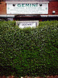
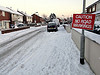
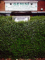
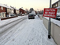

Bus Lane
Bus Lane
 Cathedral
Euston
Gig
Hedge
Cat
Snow
Totoro
Cathedral
Euston
Gig
Hedge
Cat
Snow
Totoro
{kind=link}
{kind=link}
{kind=link}
{kind=link}
{kind=link}
{kind=link}
 Cat on Roof
Cat on Roof
QuickSlide is a basic popup image viewer. Adding it to a page is easy:
Include the quickslide.js file at the bottom of your page:
<script src="quickslide.js"></script>Add rel="quickslide" to any links you want converted to
popups:
<a href="images/buslane_b.jpg" rel="quickslide">
<img src="images/buslane_t.jpg">Bus Lane
</a>
Make sure these links point to images, otherwise QuickSlide will get confused.
That's it! QuickSlide is designed to be an unobtrusive, progressive enhancement to existing pages: it won't interfere with other JavaScript widgets or libraries, and your page won't break if for some reaon the code fails to load.
There are a few options you can specify to control the behaviour of the popups. They are set using a <script> tag anywhere before the inclusion of the main quickslide.js file, like so:
<script>
QuickSlideConfig = {
loading_spinner_url: "loading-spinner.gif",
max_width: 800,
max_height: 600,
use_dimmer: true,
absolute_position: true,
auto_fit: false };
</script>
<script src="quickslide.js"></script>
The options specified in this example are currently the only ones available. An explanation of the options:
loading_spinner_url: a string containing the URL for
an image to use as a placeholder while the full image loads. It doesn't
have to be an animation – you can use any valid image you want.
Default is "loading-spinner.gif".max_width, max_height: dimensions are in pixels.
Specifying either will constrain the popup image to that size,
maintaining aspect ratio. You can specify both. No default.use_dimmer: set to true to darken the rest
of the page when a popup is show. The dimmer is a <div>
with an ID of quickslide-dimmer. The CSS file used on this page contains a simple example of usage.
Default value for this option is false.absolute_position: set to true to make the
popup scroll with the document. Default is false, which
means the popup stays in the centre of the browser window even when you
scroll up or down (i.e. it is displayed with position: fixed
style).auto_fit: set this to false to allow popups
to be larger than the browser window. Default is true.QuickSlide is also on GitHub.
Click thumbnails to show larger image; click large image to hide it again.